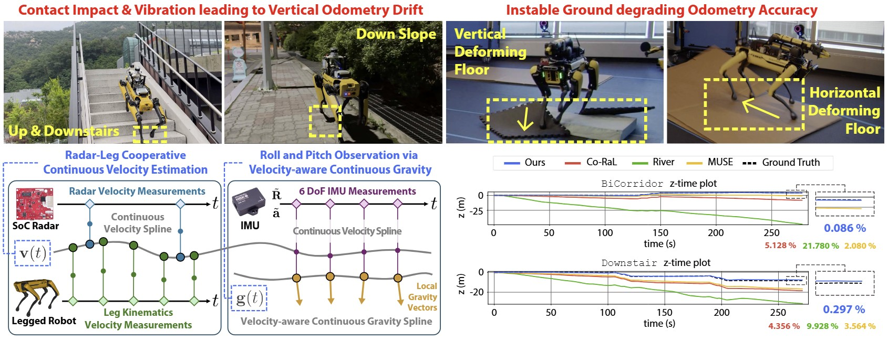
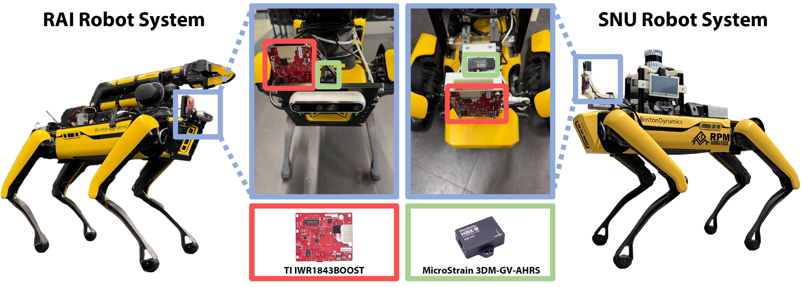
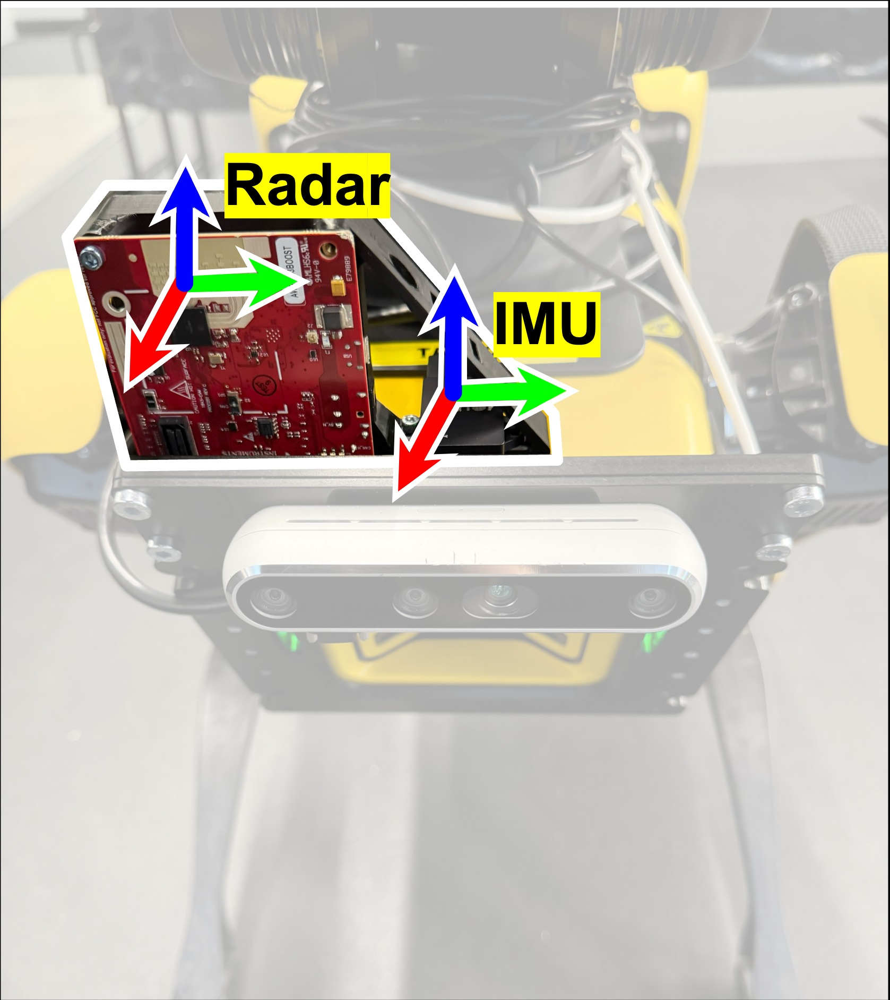
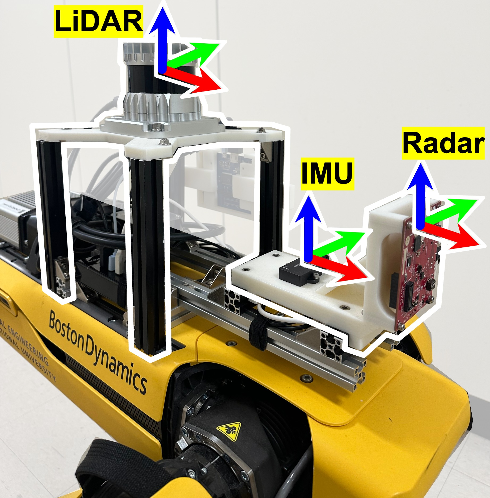

GaRLILEO: Gravity-aligned
Radar-Leg-Inertial Enhanced Odometry

Overall preview of GaRLILEO. The four subfigures in the upper row present the problematic situations that quadrupedal robots may encounter while performing real-world tasks, while the yellow letters specify the situations and the red words explain the substantial issues generated from them. Two boxes in the left part of the lower row summarize the major contribution and method of GaRLILEO, which significantly reduces odometry error, especially in the vertical direction. Two graphs in the right part of the lower row present the short experimental results, showing the accuracy of GaRLILEO in multiple sequences that include loops, sharp turns, and staircases.
Abstract
Deployment of legged robots for navigating challenging terrains (e.g., stairs, slopes, and unstructured environments) has gained increasing preference over wheel-based platforms. In such scenarios, accurate odometry estimation is a preliminary requirement for stable locomotion, localization, and mapping. Traditional proprioceptive approaches, which rely on leg kinematics sensor modalities and inertial sensing, suffer from irrepressible vertical drift caused by frequent contact impacts, foot slippage, and vibrations, particularly affected by inaccurate roll and pitch estimation. Existing methods incorporate exteroceptive sensors such as Light Detection and Ranging (LiDAR) or cameras. Further enhancement has been introduced by leveraging gravity vector estimation to add additional observations on roll and pitch, thereby increasing the accuracy of vertical pose estimation. However, these approaches tend to degrade in feature-sparse or repetitive scenes and are prone to errors from double-integrated IMU acceleration. To address these challenges, we propose GaRLILEO, a novel gravity-aligned continuous-time radar-leg-inertial odometry framework. GaRLILEO decouples velocity from the IMU by building a continuous-time ego-velocity spline from SoC radar Doppler and leg kinematics information, enabling seamless sensor fusion which mitigates odometry distortion. In addition, GaRLILEO can reliably capture accurate gravity vectors leveraging a novel soft S2-constrained gravity factor, improving vertical pose accuracy without relying on LiDAR or cameras. Evaluated on a self-collected real-world dataset with diverse indoor-outdoor trajectories, GaRLILEO demonstrates state-of-the-art accuracy, particularly in vertical odometry estimation on stairs and slopes. We open-source both our dataset and algorithm to foster further research in legged robot odometry and SLAM.
Sensor System

RAI Sensor System

TI mmWave radar and MicroStrain IMU mounted on Spot for robust indoor–outdoor operation.
SNU Sensor System

Same sensor stack on Spot, configured for repeatable data collection across varied terrains.
Sensor Specifications
| Sensor | Manufacturer | Model | Topic name | Frequency | Description |
|---|---|---|---|---|---|
| Legged robot | Boston Dynamics | Spot |
/joint_states/spot/status/feet
|
150 Hz 150 Hz |
Sensor Measurements |
| Radar | Texas Instruments | IWR1843BOOST | /ti_mmwave/radar_scan_pcl_0 |
20 Hz | |
| IMU | MicroStrain | 3DM-GV7-AHRS | /imu |
100 Hz | |
| LiDAR | Ouster | OS1-32 | /ouster/points |
10 Hz | Ground-truth Reference |
| Laser scanner | Leica | RTC360 | – | – |
TI mmwave Radar Specification
| Sensor Name | Framerate | Wave frequency | Waveform | TX antennas | RX antennas | Range resolution | Max range | Doppler velocity resolution | Max Doppler velocity | Azimuth resolution | Elevation resolution |
|---|---|---|---|---|---|---|---|---|---|---|---|
| TI mmWave IWR1843BOOST | 20Hz | 77GHz | FMCW | 3 | 4 | 0.068m | 13.92m | 0.08m/s | 2.56m/s | 15° | 58° |
Dataset Sequences
The GaRLILEO Dataset contains diverse sequences captured by a legged robot equipped with a millimeter-wave radar, IMU, and leg kinematics sensors.
It spans indoor and outdoor environments with various elevation profiles, loop trajectories, and motion dynamics.
Each sequence is provided with synchronized ros2 bag files, calibration data, and ground-truth maps/trajectories when available.
| Sequence | Path Length (m) | Elevation Change (m) | Duration (s) | Loops (#) | Rosbag | Calibration (Extrinsics) |
GT Map | GT Traj. |
|---|---|---|---|---|---|---|---|---|
| Atrium | 109.93 | - | 124.50 | 1 | Atrium | SNU System | link | link |
| BridgeLoop | 161.17 | 1.72 | 187.20 | 3 | BridgeLoop | SNU System | link | link |
| CorriLoop | 208.68 | - | 229.40 | 2 | CorriLoop | SNU System | link | link |
| BiCorridor | 240.82 | 4.72 | 277.29 | 1 | BiCorridor | SNU System | link | link |
| Downstair | 233.75 | 8.81 | 270.90 | 2 | Downstair | SNU System | link | link |
| Upstair | 197.22 | 9.37 | 227.89 | 1 | Upstair | SNU System | link | link |
| SlopeStair | 273.37 | 10.06 | 307.49 | 1 | SlopeStair | SNU System | link | link |
| Overpass | 169.17 | 7.23 | 213.49 | 1 | Overpass | SNU System | link | link |
| Tunnel | 247.94 | - | 277.00 | 1 | Tunnel | SNU System | link | link |
| Quad | 447.83 | 10.72 | 503.69 | 1 | Quad | SNU System | link | link |
| MoCap-E | 44.91 | 0.57 | 139.10 | 2 | MoCap-E | RAI System | - | link |
| MoCap-H | 42.48 | 0.60 | 79.46 | 2 | MoCap-H | RAI System | - | link |
Qualitative Comparison
BibTeX
@article{2025,
title={GaRLILEO: Gravity-aligned Radar-Leg-Inertial Enhanced Odometry},
author={Chiyun Noh, Sangwoo Jung, Hanjun Kim, Yafei Hu, Laura Herlant, and Ayoung Kim},
journal={},
year={2025},
url={https://garlileo.github.io/GaRLILEO/}
}